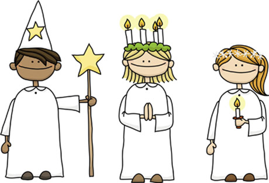

som firas den 13 december, samt namnet på högtidens huvudperson. I Sverige markerar luciadagen tillsammans med advent inledningen på julfirandet. Den svenska Lucian är en blandning av både förkristna och kristna figurer och denna tradition har spridit sig till andra nordiska länder, och i viss mån också utanför Norden. Lucia är även ett helgon i romersk-katolska kyrkan med ursprung från Sicilien. Dagens nordiska luciafirande har dock inte mycket gemensamt med helgonkulten. Ordet lucia kommer från latinets lux, vilket betyder ljus.
